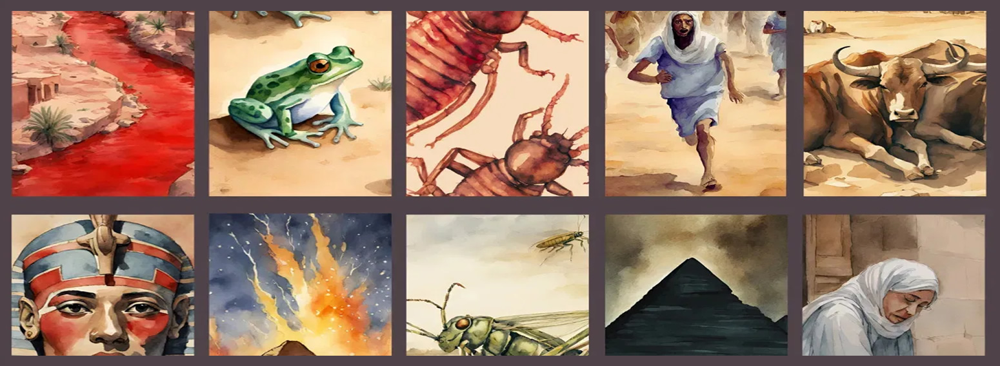

Covenant Remembered: God's Faithfulness in Egypt (Exodus 2:23 - 25)
"God heard their groaning, and God remembered His covenant with Abraham, with Isaac, and with Jacob." (Exodus 2:24)
In the silence of suffering, Israel groaned under Egyptian oppression. Their cries rose - not merely as pain, but as covenant invocation. God's response was not delayed by forgetfulness, but timed by divine purpose. He remembered His promise, and the story of redemption accelerated.

Groaning and Grace
Israel's lament was more than anguish - it was a spiritual echo of covenant hope. Though generations had passed since Joseph, the promise to Abraham remained alive in God's heart.
- Groaning: A cry of covenant longing, not just despair.
- Remembrance: God's active engagement, not passive recall.
- Initiation: The beginning of divine intervention through Moses.
Theological Significance
This moment marks a turning point. God's remembrance leads to action. The covenant is not static - it moves history. From this point, every plague, every miracle, and every liberation act flows from divine fidelity.
Relevance to Salvation
- God hears the cries of the oppressed and responds with covenant mercy.
- Salvation is rooted in promises made and kept across generations.
- Divine remembrance is the catalyst for deliverance and restoration.
"God saw the people of Israel - and God knew." (Exodus 2:25)